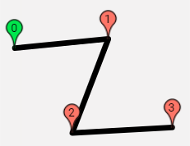

Load file
Load file from your device.
You can load GPS data in .gpx format or previously created mission in this editor (.taitale).
You can load GPS data in .gpx format or previously created mission in this editor (.taitale).
Load file from cloud storage.
You can load GPS data in .gpx format or previously created mission in this editor (.taitale).
You can load GPS data in .gpx format or previously created mission in this editor (.taitale).
New track

Create new track by manualy positioning waypoints into the map.
 Cover selected area by track in the form of a grid.
Cover selected area by track in the form of a grid.
Select vertices of a polygon, which will be filled by evenly spaced parallel lines.
Track parameters
Track statistics
Trackpoints: 0
Lowest point: 0m
Highest point: 0m
Lowest point: 0m
Highest point: 0m
Map length: 0m
Real length: 0m
Flight time: -m -s
Real length: 0m
Flight time: -m -s
Track profile
No elevation data for the current track.
Save file